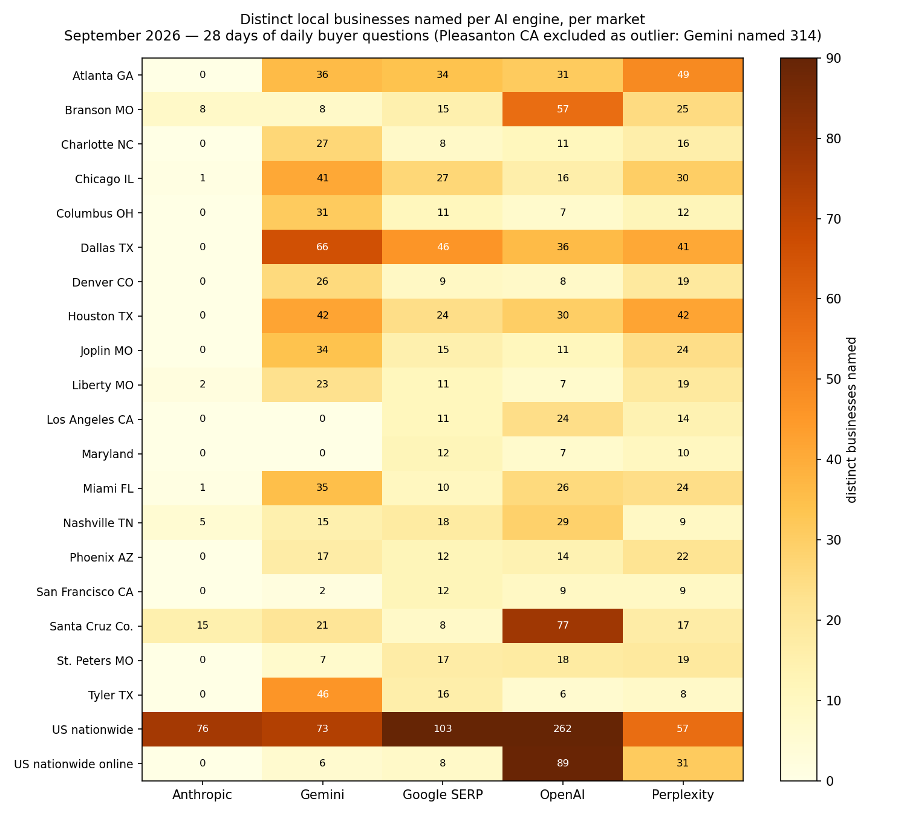

28 days of the same buyer questions, asked daily in 22 US markets. Every answer dated. Every claim linked to its receipt.
Count distinct local businesses each engine named per market, across the full month:
| Engine | Businesses named |
|---|---|
| OpenAI (ChatGPT) | 880 |
| Gemini | 870 |
| Perplexity | 663 |
| Google SERP (baseline) | 526 |
| Anthropic (Claude) | 114 |
It named zero businesses in 14 of 22 markets. In Dallas it named 0 while Gemini named 66 and Perplexity 41. Its only chatty showing was the generic “US nationwide” query set (76). If you only measure ChatGPT, you are missing how quiet Claude is on local.
Gemini named 314 distinct businesses in Pleasanton, CA — and literally 0 in Los Angeles and Maryland. Same engines, same questions, different city, different universe. Which engine you measure changes the answer completely.
880 across 22 markets, present in every single one — from 262 on nationwide queries down to 6 in Tyler, TX. When people say “AI recommends businesses,” this is mostly what they mean.

Every number above traces to a dated per-market report:
Businesses named in the September corpus can embed the free AI-Named badge — dated, verified, linked to the public report.
Get your own free 5-engine check. Dated. Unedited. No signup, no card.
Run my free check